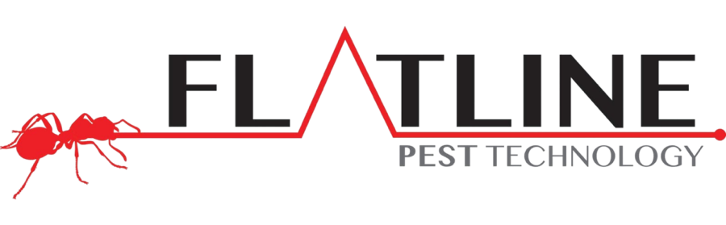
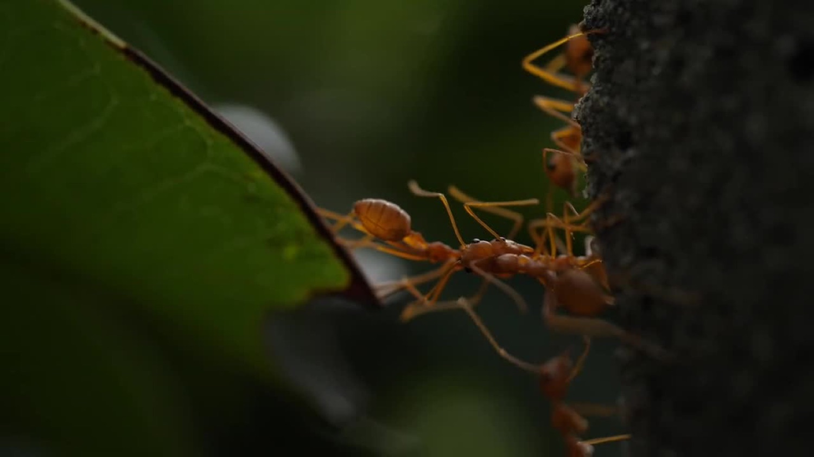
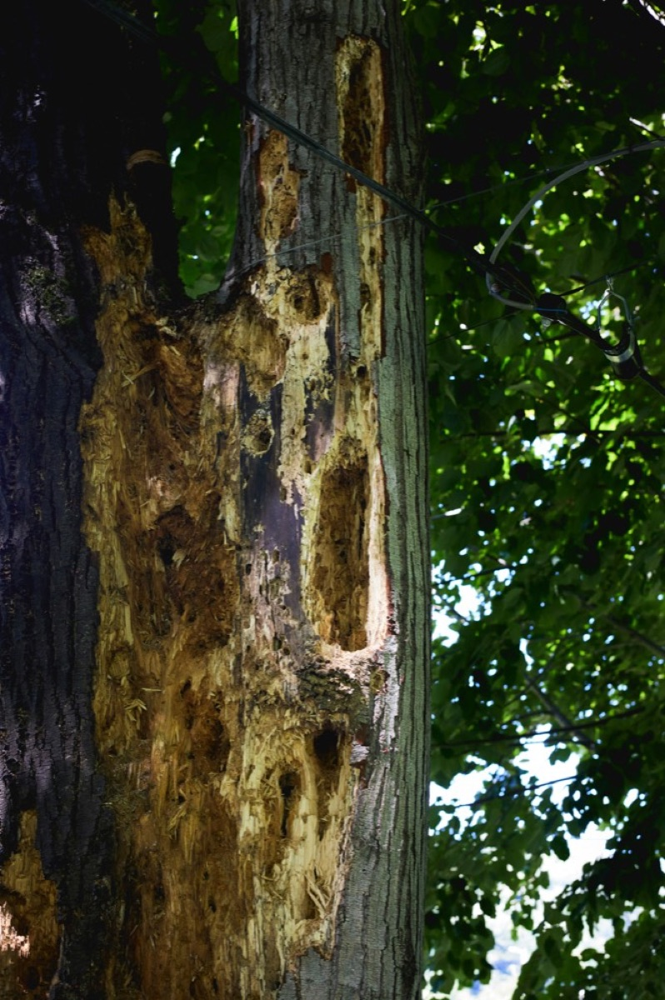
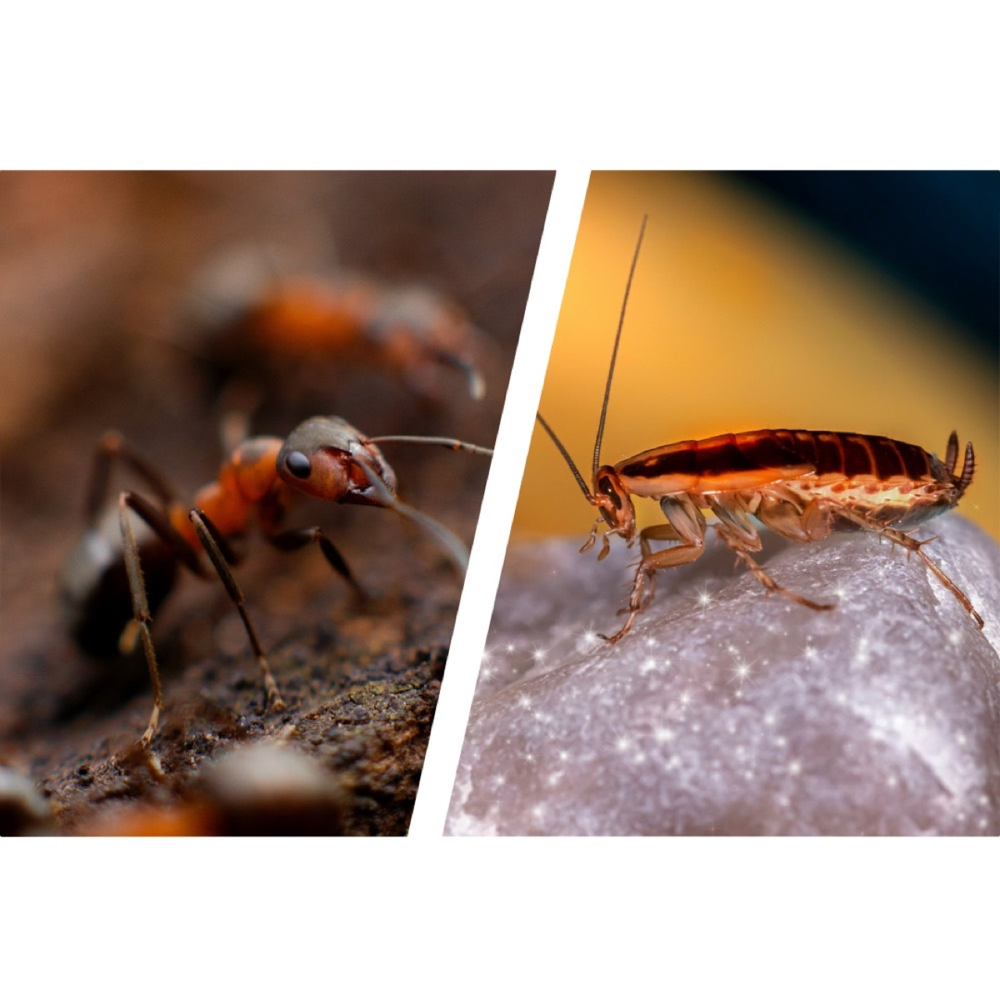
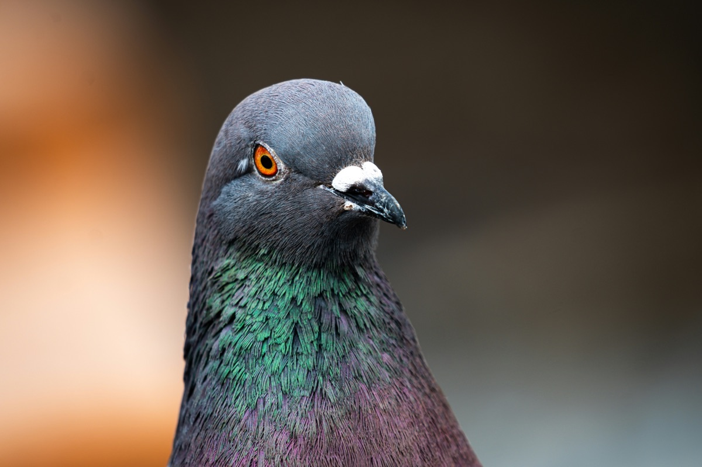
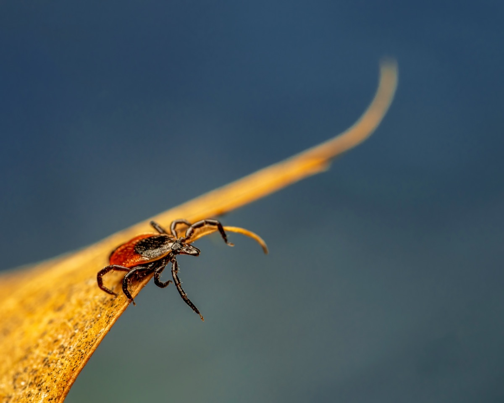
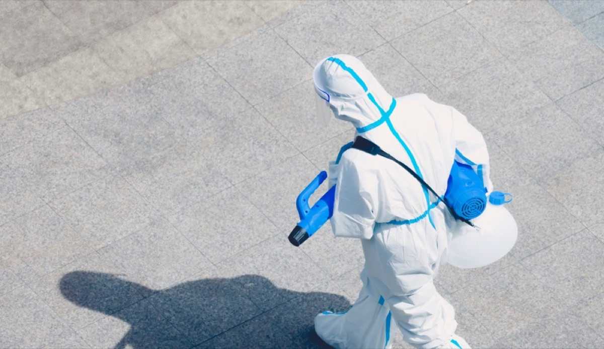

BEA Award of Excellence in Scriptwriting
In February 2025, Ethan Smith was the recipient of the Broadcast Education Association (BEA) Award of Excellence in Scriptwriting for his original short film script, Earl's Portrait (2024).
Contact
In everything he does, Ethan Smith tells a story. He is a filmmaker, a software engineer, an artist in both, and a maker of moments. The goal of this young man is to be a source of fond "forever memories" in the lives of others.

Recognition
In February 2025, Ethan Smith was the recipient of the Broadcast Education Association (BEA) Award of Excellence in Scriptwriting for his original short film script, Earl's Portrait (2024).

In March 2026, Ethan Smith's The Civilizing Effect (2026), was selected as a finalist in the deadCenter Film Education Writer's Room competition.

In August 2022, Ethan Smith became a member of the United World Scholars Program, studying at the University of Oklahoma on a full scholarship from the Shelby Davis Foundation.
Filmography
Short Film • 2026
Executive Producer, Script Supervisor, 1st Assistant Director & 2nd Assistant Camera
On opposite sides of a covert war, two elite operatives with a history of betrayal and attraction cross paths during a warehouse heist, where old wounds and buried feelings threaten to ruin the mission.
Short Film • 2026
Writer, Script Supervisor & 1st Assistant Camera
A scientist tests a new behavioral chip on his android assistant. As the system begins rewarding ruthless efficiency over empathy, the experiment reveals how easily identity can be reshaped by a system's incentives.
Short Film • 2024
Writer, Director, Cinematographer, Actor & Editor
An artsy girl with a promiscuous reputation and a smooth, outgoing rapper take their budding romance through the talking stage.
Short Film • 2023
Writer & Set Designer
After a flat tire strands him near an isolated old house, a nervous traveler accepts dinner from its unsettling occupant and slowly realizes the accident may have been a trap.
Photography & Design

NABJ Executive Team Photoshoot Collection • 2025
A campaign-style executive team shoot created for OU NABJ, built around editorial cover design, press-room staging, and a bold magazine treatment. I served as creative director, photographer for the team portraits except my own, and editor/designer for the final graphics.


Full Stack App Development

Limer is the social app I’m building for the college experience, where clubs, events, and group chats actually connect instead of living in separate places. You can discover what’s happening, see who’s going, post a recap, and keep the conversation moving without it turning into another dead group chat. It’s built around one idea, make it easier to meet people in real life, and make campus feel smaller in a good way.
Browse clubs and events, RSVP & stop guessing where everyone’s going.
Share memories at the Bonfire & tag the event so it's tied to a real moment.
Make plans in DMs, group chats & club chats with QuickReply built in.
Product Case Study
A responsive concept website for a local gym, designed to translate 496 Gym's real-world energy, class schedule, memberships, and community into a polished digital experience.
Homepage hero screenshot
Replace this preview with a final 496 Gym homepage screenshot.Overview
496 Gym needed a modern digital experience that could communicate its identity as a premium 24-hour fitness and wellness destination in Valpark. The project began with notes from the existing website, real gym assets, membership information, class schedules, logo files, and class/event media. From there, I designed and developed a responsive prototype focused on visual energy, clear navigation, accurate class information, membership discovery, and community storytelling.
The project evolved through many rounds of critique and refinement, including header behavior, logo treatment, class video layouts, dynamic class scheduling, community carousel design, color systems, typography, and section structure.
The Problem
The existing gym website did not fully reflect the energy, professionalism, and community feel of 496 Gym. It needed a stronger first impression, clearer membership and class information, and a more engaging way to showcase what makes the gym active and local.
Goals
Inputs

Audience
Needs pricing, available classes, confidence that the gym is active, and quick join/sign-in actions.
Needs today's classes, schedule access, membership/profile tools, and upcoming community events.
Needs staff task access, clear profile states, and member/staff flows separated from main navigation.
Needs familiar UI patterns, readable buttons, clear navigation, and obvious carousel controls.
Information Architecture
Membership, Events, Classes, Schedule, Store, and Staff Task List became the main navigation group, while Join Now and the profile mini menu were right-aligned as account-oriented actions.
Brand & Visual Direction
The visual direction was rebuilt around the official blue/white/black logo colors. I tested multiple logo files, cleaned up unwanted white-corner artifacts, and used athletic typography to make the prototype feel bold without becoming gloomy.
Key UX/UI Decisions
The header felt cramped and account actions were mixed with main navigation.
Separated primary navigation from account actions, right-aligned Join Now and the profile menu, and created a frosted pill navigation bar.
Improved hierarchy and made the header easier to scan.
The homepage originally featured one class, but some days include multiple classes.
Built a dynamic hero that splits into one, two, or three equal video panels based on the day's schedule.
The homepage now reflects the actual day at the gym and gives equal visual weight to multiple classes.
Text over video needed readability, but heavy overlays made the page feel gloomy.
Tested dark filters, class-colored overlays, blue gradients, blur treatments, and simpler contrast layers.
The final direction preserved visual energy while keeping text usable.
The gym's community aspect needed stronger storytelling.
Created a focused event carousel with real event posts, visible adjacent cards, date bubbles, and arrow controls.
It communicated ongoing local activity and made 496 feel like a community brand, not only a workout space.
Content Design
Development & Implementation
Iteration Timeline
Built initial homepage, navigation, memberships, classes, logo use, and real data.
Separated nav/account actions and tested thickness, borders, blur, transparency, and gradients.
Replaced a single featured class with dynamic multi-class video splits and clearer hierarchy.
Added the large welcome statement, scroll reveal, and 496-to-GYM transformation.
Rebuilt cards as cinematic image panels with upcoming logic and class-specific styling.
Added real event posts, team background, focused carousel, arrow controls, and refined overlays.
 July 5, 2026
July 5, 2026
 April 5, 2026
April 5, 2026
 January 27, 2026
January 27, 2026
 September 22, 2025
September 22, 2025
Challenges
The homepage used large videos and bold typography, which created readability challenges. I tested multiple overlay approaches before settling on treatments that preserved energy without making the page feel heavy. Many decisions came down to small refinements: logo sizing, header height, bubble spacing, text alignment, video crops, and carousel placement.
Current Outcome
The result is a polished responsive concept that presents 496 Gym as a modern, community-centered fitness brand using real schedules, memberships, brand assets, class media, and event imagery.
Future Roadmap
Reflection
This project helped me practice the full cycle of designing and developing a real business-facing digital experience. I worked from existing brand assets, real membership data, class schedules, stakeholder preferences, and continuous critique.
I also learned how to balance visual ambition with usability. Some ideas looked interesting in isolation but did not support the user experience once tested in context. More than building a website, this became an exercise in translating a local gym's identity, services, and community into a digital product experience.
Launched Business Website
I partnered with a local pest control business in Trinidad & Tobago to design and launch a conversion-focused digital experience that improves trust, customer understanding, and lead generation.

Fast solutions for the pests you want gone.
Live website launched for a real pest control company operating in Trinidad & Tobago.Project Overview
Flatline needed a modern digital presence that could build trust, explain services clearly, make contact easier, support lead generation, and reflect the business professionally. The company has operated in Trinidad and Tobago since 2012, with management and employees bringing more than 32 years of combined pest and sanitation management experience.
The website had to feel professional, welcoming, trustworthy, and easy to maneuver, especially for customers who may be older, in an urgent situation, or not especially tech-savvy.
The Problem
Pest control often involves urgency and uncertainty. Prospective customers needed a clearer way to understand available services, trust the company, and request an inspection quickly. The website needed to support direct referrals while creating a more reliable digital path for new leads.
Stakeholder Research

Goals
Audience
Wants fast help, may not know what pest they are dealing with, and needs reassurance plus clear next steps.
Needs reliable, low-disruption service, insurance confidence, and fast communication.
Needs pre-construction termite treatment, compliance confidence, timeline clarity, and long-term protection.
Needs to know Flatline can handle boats, yachts, sailboats, and other non-traditional environments.
Information Architecture
The homepage guides people from the promise, to services, to trust factors, to the process, to an inspection request. The About page carries company background, IPM approach, training, and client categories without exposing specific client names.
Content Strategy
Service Architecture

High-value
Core Service
Separated
Expanded
Trust SignalBrand & Visual Direction
The visual system uses brand red from the logo, deep green for trust and contrast, and light mint/green card surfaces for a clean service feel. Rounded cards, soft shadows, large readable type, and service imagery make the site feel modern without making it difficult for older users.
Motion Detail
I iterated from a static heartbeat-like line into a custom animated pulse that flatlines into an uploaded ant image. The timing, red color, scale, alignment, and final linger were refined so the metaphor landed without distracting from the inspection CTA.
UX Decisions
Users needed a clear path to request help.
Moved "Talk to An Expert Now" to the center of the header with inspection-supporting copy.
Higher interaction with the main lead-generation action.
Mobile users should not need to scroll to find contact actions.
Added persistent quick actions for calling, WhatsApp, and requesting an inspection.
Reduced friction for urgent or older mobile users.
"Free inspection" could mislead Tobago or regional customers.
Added an asterisk and clarified that free inspections apply in Trinidad only.
Better transparency and fewer expectation gaps.
Specific client names could expose relationships and create poaching concerns.
Replaced names with general client categories while preserving credibility.
Protected client relationships without weakening trust.
Development & Launch
SEO & Local Business Strategy
Iteration Log
Asked stakeholder questions about services, leads, trust factors, and contact preferences.
Refined header layout, phone number visibility, and inspection action placement.
Expanded cards for termite, marine, rodent, bird, mosquito, flea/tick, lawn, and sanitization services.
Polished heartbeat-to-dead-ant timing, image use, color, alignment, and sequence.
Added a dedicated About page and changed named clients into general client categories.
Resolved asset-size friction, deployed through Cloudflare Pages, connected the domain, and checked HTTPS behavior.
Current Status
Future Metrics
Future Roadmap
Reflection
This project taught me to treat a website as a business problem, not just a design task. I practiced stakeholder interviewing, translated business needs into UX and content decisions, balanced brand, usability, SEO, and conversion, and gained experience deploying and troubleshooting a real website.
It also showed me how content design can reduce customer confusion and support trust. Small choices like clarifying inspection limits, protecting client privacy, and making WhatsApp easier to find can matter just as much as the visual design.
Reflection
Working on The Civilizing Effect was for sure one of the most meaningful creative experiences I have gotten to experience in college so far. It was a project that challenged me creatively and technically and I think it taught me a lot about collaboration and adaptation in filmmaking. Our group was Eric, Emma, Lauren, Tori, and myself, and very early in the semester we decided to divide up our roles.
I took on the role of writer because writing has always been one of my strong creative interests, and everyone in the group agreed that it made sense for me to handle the script.
The assignment was to adapt a chapter from Douglas Rushkoff’s Program Or Be Programmed textbook, and our group was assigned the chapter on identity. After reading the chapter, I started trying to figure out the way we could translate those ideas into a narrative that people would actually emotionally connect with. Personally, I feel like that was the hardest part at first. The chapter discussed anonymity, social systems and the way technology can reward efficiency over empathy, so my focus was going to be on those themes. One of the major concepts was the “civilizing effect,” which is basically the idea that when people are less anonymous and more connected to each other as human beings, they tend to behave with more empathy and understanding.
Eric suggested the idea of using a cyborg character to explore identity, and I thought that was a really good direction to go because it gave us a way to examine humanity from the outside looking in. From there, I created a really big mind map where I started planning possible characters, backstories, themes, and plot points. Honestly, although that process was difficult, it was one of my favorite parts of the project because it felt like I was slowly discovering the story. Once I had enough ideas mapped out, I wrote the first draft of the script.
After that, we had a meeting at Yellow Dog Coffee with Emma and Lauren where we went through both the script and the mind map together. They gave feedback and notes on certain scenes and story elements, and I went back and revised the script again. I think this stage taught me a lot about the collaborative nature of filmmaking. Writing for film is different from writing something completely personal because you have to leave room for other people’s ideas and interpretations. At first that was difficult for me because when you spend so much time writing something, you naturally become attached to it. Over time though, I realized that the feedback was helping the project become stronger and more focused.
When filming began, my role expanded beyond writing. Officially, I acted as a script supervisor, but I also helped with directing actors and worked as second AC during production. Since I had written the script, I felt like I had a strong understanding of the emotional intentions behind scenes and dialogue. During filming, I would help actors with questions they had about their characters or the emotions in a scene. I was not trying to fully direct performances, but more so just to help make sure the emotions matched the tone and meaning of the script.
Technically, the production days were also a really valuable experience for me. We were fortunate enough to have access to a larger crew through connections at Gaylord College, and that made the set feel much more real and professional. One of the most memorable things I got to do was operate a dolly zoom shot. I honestly thought that was very cool because it was one of those film techniques I had always seen in movies, but never executed myself. Being able to physically contribute to the cinematography gave me a greater appreciation for the way visual storytelling works alongside writing and acting.
The entire film was shot at Lauren’s house across two filming days. During production, there were also practical limitations we had to deal with, especially regarding time. Emma eventually revised parts of the script in order to reduce the number of scenes and make production more manageable. At first, I think part of me struggled with seeing changes made to something I originally wrote. However, filmmaking is such a collaborative medium, and what this experience taught me is that flexibility is extremely necessary. A screenplay on paper is one thing, but the realities of production can end up requiring adjustments and you have to be prepared for that. The thing that mattered most was preserving the emotional and thematic message that was at the core of the story.
Looking back on the project now, I think the biggest thing I learned was the importance of collaboration and trust within a creative team. Every person involved contributed something valuable, and the final product became stronger because of that. Personally, I also gained confidence in my ability to write stories that communicate larger ideas through character and emotion. I feel like The Civilizing Effect came out pretty good in the end, and now when I look at it, I am genuinely proud of the work we created together.
Capabilities
Content strategy, UX writing, content architecture, inclusive design, accessibility standards, and AP Style.
TypeScript/JavaScript, React Native, Supabase, PostgreSQL, Auth, Storage, RESTful APIs, Git, Figma, and Jira.
Scriptwriting, directing, cinematography, editing, set design, script supervision, camera support, Premiere, Audition, and Photoshop.
Project management, team leadership, social media marketing, campaign strategy, event branding, community engagement, and student organization growth.
A practical mix of filmmaking, UX, software, leadership, and brand-building experience, shaped through Limer, student media leadership, creative production, and community work.
Download Resume